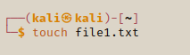

Viewing, Editing & Creating Files
In this sesction we will have a quick overview of how to create a new file in your terminal, view the files and update them.
As mentioned before we can use touch to create a new file.
touch file1.txt

We can also use the echo command to create a file.
echo "hello world" > hello.txt

We can view the contents of a file by using the cat command. We will use cat to view the contents of hello.txt
cat hello.txt

We can navigate to different directories and view fles from any destination
With the echo command we can also print text to the terminal
echo "my name is Sinclair"

We can also append data to an existing file with echo by using method as creating a new file but instead with 2x > signs instead of one.
echo "this is new line" >> hello.txt

This adds the data in a new line
We have to be aware that if we forget to use >> when appending/updating a file we will overwrite the file instead.
The cat method has a practical use as a pen tester because it allows it to create and update existing files for our exploits within the terminal (like creating a list of IP addresses).
nano is Kali Linux's built in text editor in the terminal that we can use to create, view and edit files.
If we check file1.txt with cat you can see it's empty because nothing appears in the terminal. So let's enter the file by using nano so we can update it.
nano file1.txt

A text editing GUI will appear where you can write your scripts / text

ctrl+X to exit the text editor

Press Y to save and exit.

Press enter to save or you have the option to chnage the file name.
If you choose to chnage the file name, a new file will be created and the original will be left untouched. If we now view file1.txt we will be able to see our changes.

The new updates are now visible
You also have other text editors like VS Code or Gedit from the previous one. One thing to remember when you are accessing a target's machine, most likely you won't have access to a GUI like VS Code or Gedit so you would have to ue the terminal like nano, vi or vim.